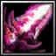

천지개벽 (Splitting of Sky and Earth)
[양손검]
- 데미지 +31300
- 힘 +2230
- 스킬 데미지 & 치명타 확률 10% 상승
- 스킬 사용시 영광의 전주 발동
- 스킬 시전마다 6초간 힘 150, 스킬 데미지 2.5% 상승
- 공격시 60% 확률로 (2.5 X 중첩 X 힘)의 마법 데미지를 가함
- 최대 4번 중첩 (최대 중첩시 더 이상 지속 시간이 초기화되지 않음)
- 사용시 개벽의 빛 발동
- 영광의 전주를 즉시 전부 중첩시키며, 지속 시간동안 치명타 확률 20% / 치명타 배수 0.4x 증가
- 쿨다운: 90초
특수 효과
- 랜서 특수 효과 - 천류
- 비전식 유성창에 천류가 깃들게 되어 데미지가 50% 증가하며 모든 능력치를 증가시키게 된다.